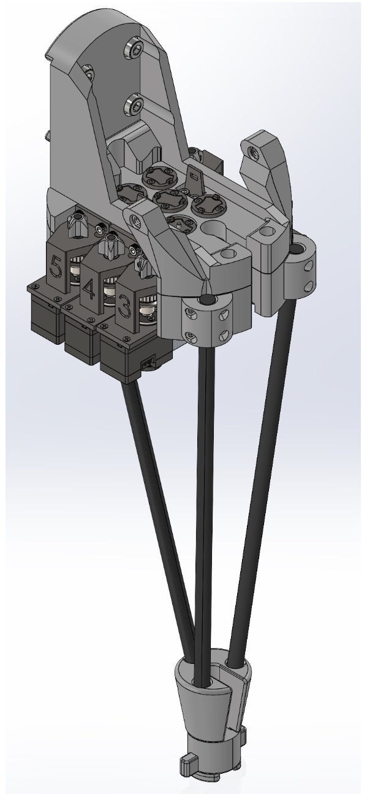

Hello, world!
I'm Douglas McDonough.
Medical Robotics Engineer.
I am an MSE student in Mechanical Engineering at Johns Hopkins University specializing in medical robotics. My research currently supports an ARPA-H grant for supervised autonomous robotic renal tumor resection. This includes designing and constructing custom robotic adapters to developing deep learning models for imitation learning.
Featured Hardware Project
Mechanical design, physical prototyping, and robotic integration.

da Vinci Xi Tool Adapter & Motor Pack
Redesigned a modular tool adapter for an ARPA-H funded partial nephrectomy project to integrate da Vinci Xi surgical instruments with a Universal Robots (UR5) arm.
Key Engineering Upgrades
- Actuation Upgrade: Incorporated Dynamixel XC330-M288-T motors, allowing current based position control for automatic homing.
- Tool Engagement: Incorporated 3mm stroke spring plungers on the inner shaft and D-profile cuts for set screws to facilitate rapid, secure tool attachment.
- Secure Attachment: Integrated snap clips and star knobs to rigidly maintain the precise positioning of the surgical tool tip during teleoperation.
- ROS2 Control: Developed a multi-modal control system including Current-Based Homing and Joystick Teleoperation using custom coupling matrices.
Engineering Drawings (PDF)
SolidWorks
UR5 Arm
Dynamixel Servos
ROS 2